My most traveled year. A photo review of 2017.

2017 was a whirlwind year
America inaugurated a new president, Brittan triggered article 50, and North Korea tested ballistic missiles, all the while, the globe continues to get warmer. With headlines like those, it makes any accomplishments or activities in my life seem hardly worth noting. Perhaps the best thing about being an Expat in Germany is that it is like living on cloud 9, so despite being a news and politics junkie, I maintain a high degree of happiness.
So what am I doing with my abundance of happiness? Well, 2017 was my most-traveled year, having visited 11 countries. I also started a new job at trivago as a product owner overseeing development of the trivago website. This was a great career change as it is making good use of my life’s work tinkering with and passion for web development. I changed apartments and now live directly in the beautiful historic center of Düsseldorf. I also made some progress connecting with my community via an organization which teaches web development skills to refugees.
All in all, 2017 was an incredible year and it will be hard to improve upon that in 2018. Of course, I do accept the challenge. In reflection of the last year, here is a month-by-month recap of some highlights.
January - Myrtle Beach as spokesperson for trivago
The new year started off strong. In January I attended a hospitality trade fair in South Carolina where I was a spokesperson for trivago’s business tools. The three colleagues I traveled with were all amazing people and I have kept them as close friends throughout the year. Here is a sunset selfie on the empty Myrtle Beach off-season shoreline.
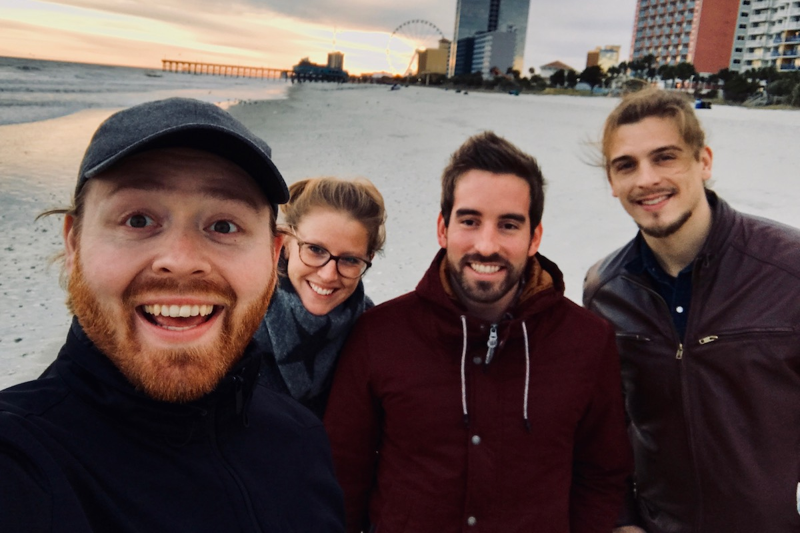
February - Oldenburg for a Kohlfahrt
I often talk about how my life’s story began when I was a Rotary Youth Exchange Student in Germany. In February I had an opportunity to return for the first time to where it all started in Oldenburg.
My very favorite German tradition is native to this northwest region of Germany. It is called a Kohlfahrt, which translates roughly to “kale walk.” Winter time is high-season for kale in this part of the world. To celebrate the end of the winter kale harvest, locals go on a Kohlfahrt. We loaded up a wagon with beer and schnapps, tied shot glasses around our necks on a string, and headed out into the countryside for a few hours of winter wilderness walking and drinking games.
The whole thing ends at a restaurant where there is live music, more drinks, lots of food, and of course: kale!
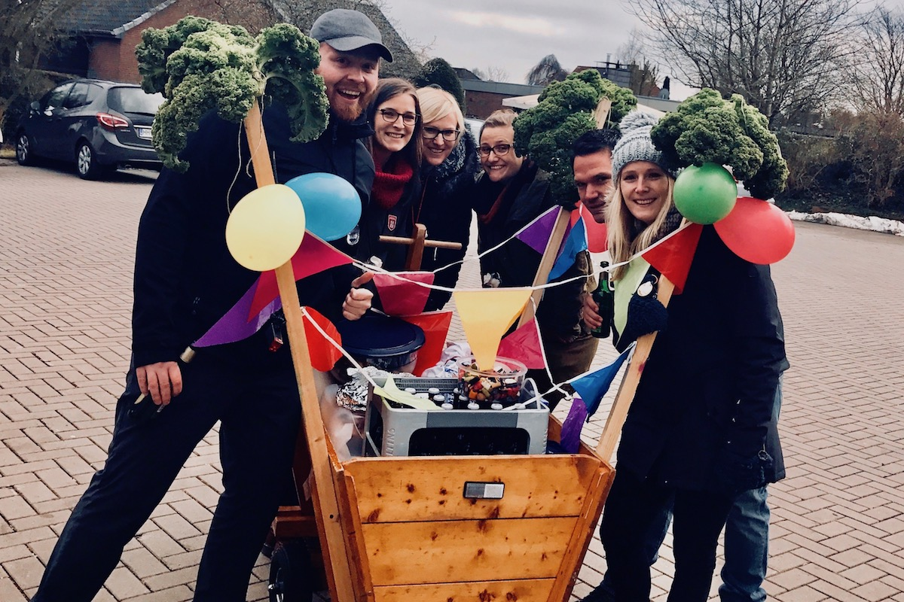
February (part 2) - Amsterdam
Alright, I am going to fudge my own rule here and list two highlights for February. My girlfriend Britta, and I went to Amsterdam for a weekend. Despite having really bad luck with the weather, we had an amazing time exploring the city and seeking shelter in museums and pubs. I learned that the Netherlands is famous for cheese and ate my weight in free samples at the Amsterdam Cheese Museum.
In literally our last 30 minutes in Amsterdam, the clouds broke and we got a peak of sunlight. Here is one of the few photos I was able to take in our final minutes in Amsterdam.
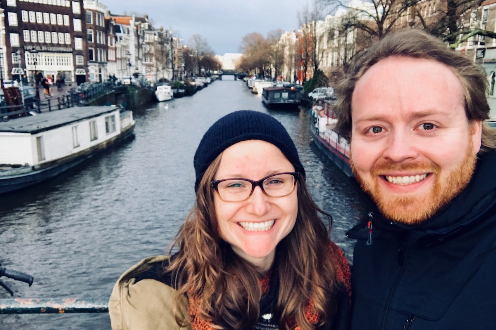
March - Morocco for a week
From the High Atlas mountains to the ancient bazaars of Fez, a week in Morocco was a highlight of 2017, not just March. Despite still being in recovery from a knee surgery just three months earlier, I was able to keep up with some light hiking in the mountains and walking throughout the rugged terrain of the cities. I had no appreciation for how vast and diverse Morocco was until I visited. Morocco is home to the second-highest mountain in all of Africa, the oldest pedestrian-only city center in the world, pristine coastline, and the Sahara Desert.
With only a week in Morocco, we covered a lot of territory and saw a lot of the country from a train window, but there is much more to see. I am already preparing plans for a return trip to Morocco in 2018. Stay tuned!
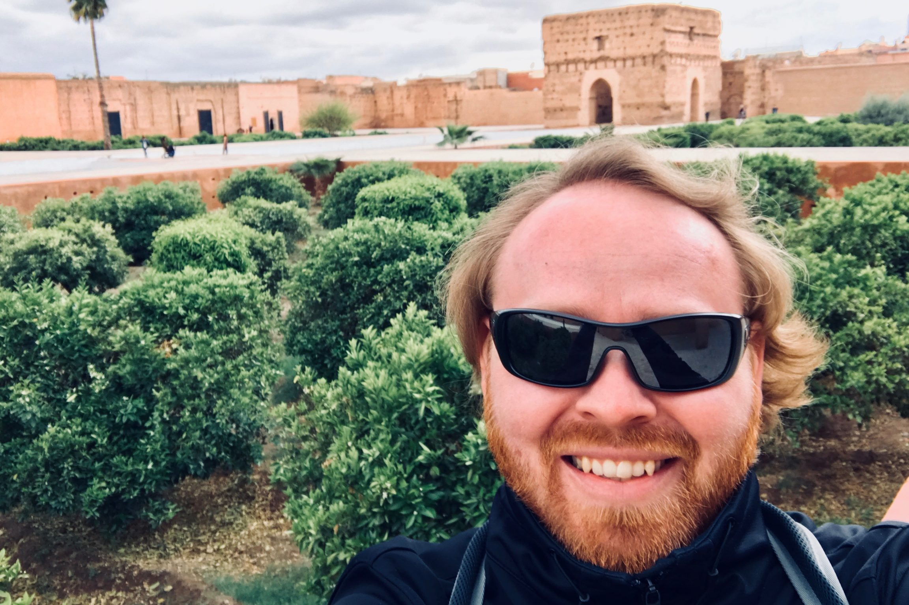
April - Neanderthal Valley Hiking
The Neanderthal Valley is located less than 10 miles from my home in Düsseldorf. This region is full of farmland and limestone quarries, both of which make a dramatic impression on the landscape. Undoubtedly, the Neanderthal Valley is best known for being the home of the 40,000-year-old Neanderthal Man, which as it turns out is not 1 person, but a group of neanderthal remains found in the valley from which the famed Neanderthal Man’s reconstruction has been created.
The area also has a very well-organized and well-maintained trail network which provides you with a front row seat to the beauty of nature, the abandoned quarries, and endless fields of rapeseed, which, when in-season blanket the Earth in the most spectacular golden carpets. Here is me showing how stoked I am to be with the rapeseed.
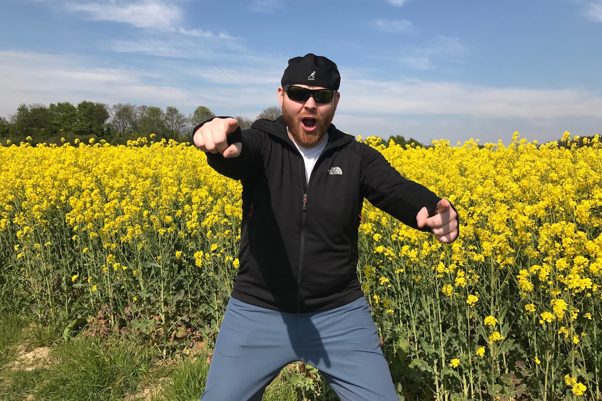
May - Mom visits and we meet my German host family
Unequivocally, the single best thing to happen in all of 2017 was that my mom came to visit me in Germany! We had a blast exploring Germany for two weeks. Among our destinations, I introduced mom to Oldenburg. While there, I also had a reunion with my host parents. It was my first time to see them in 17 years and it was the first time for my host parents to meet my mom. It was a special moment in the middle of a very special trip.
Also: I got a haircut!
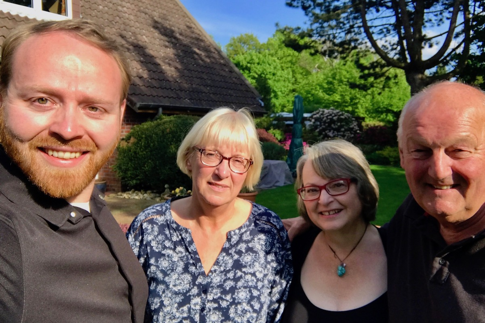
June - Whitewater rafting and canyoning in Austria
trivago has these cool shared-cost events called “experience academies.” They are typically 3-4 day trips to any number of interesting destinations which offer interesting experiences. They have taken employees sailing, to CERN, and on this occasion, to Austria for whitewater rafting and canyoning! Unfortunately, I don’t have any photos of the main activities, but I can say this: whitewater rafting was a lot more chill than I expected, and canyoning is quite possibly the most difficult physical thing I have ever attempted.
We had a free day so we went to Area 47, a massive outdoor water and adventure park surrounded by huge vertical mountains, where I was able to snap a few shots. Here you can see some of the more impressive waterslides from the park.
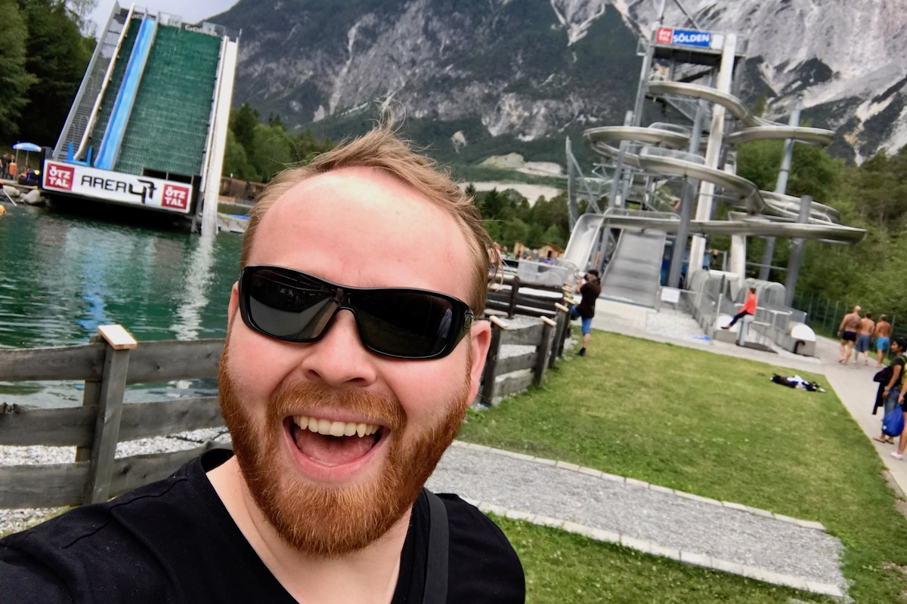
July - Spartan Race
Spartan Races take place all over the world and are a true feat of strength. They involve a 5km (minimum) run with dozens of obstacles in the way. The obstacles include climbing, jumping, crawling, swimming, lifting, spear-throwing, and other feats. If you fail at an obstacle, you have to do 50 burpees. To say this was difficult for me would be quite the understatement. But I finished and it was awesome. I look forward to running again next year with the trivago team!
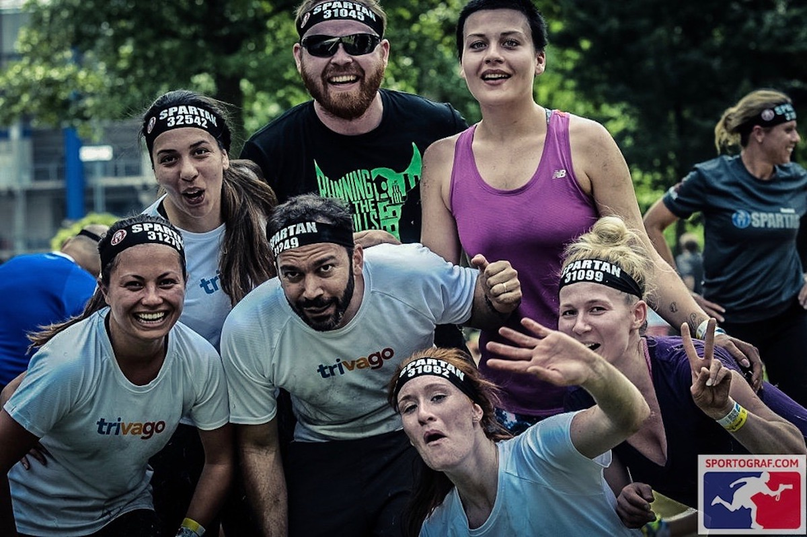
August - The Mosel Valley: Germany’s wine country
Every year, I go on a wine-tasting weekend with my German friends. This year we went to the Mosel Valley and tried a dozen different kinds of rieslings. I don’t particularly like white wine or sweet wine, so I struggled a bit to get through the wine tastings, but the geography around the Mosel River is breathtaking and we could not have asked for better weather.
September - Nordic cruise to Norway and Denmark
trivago really empowered a lot of personal travel for me this year. In September, trivago booked out a whole cruise ship and took all employees on a private cruise to Norway and to Denmark. The cruise had live music every night. The destinations had curated activities. The train to and from the boat was a dance club on rails. If you haven’t read it yet, check out my article about trivago on Tour 2017 and see the video of the party train.
Here I am in Norway with a moose.
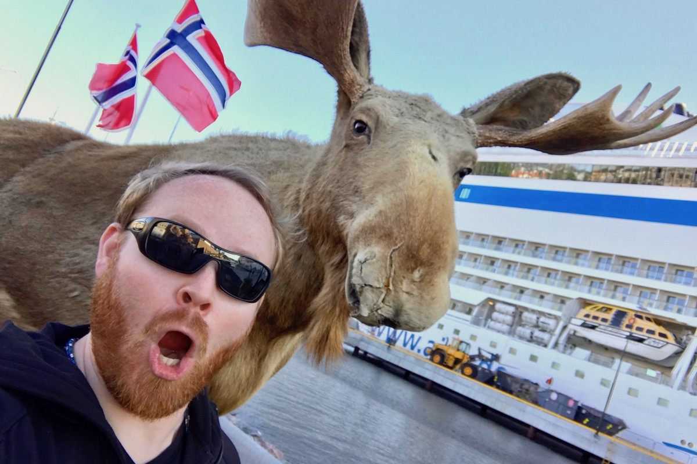
October - Northern Italy and the most stunning sunset
To celebrate the 500th anniversary of the Reformation, which began in Germany when Martin Luther nailed his Ninety-five Theses to the door of a church in Wittenberg, the German government saw it fit to give us a 5-day weekend. Woo hoo! So I headed off to Italy with a group of friends. We rented a car and road-tripped through Milan, Lake Como, Bergamo and Parma.
We drank a lot of wine, ate lots of pizzas and pasta, we got lost in the world’s largest hedge maze, and we took in lots of sights. The whole trip was incredible, but nothing compares with this sunset we saw over Lake Como. This photo has no filter or alterations and does no justice to the majesty of the experience. I have never seen cloud formations like this, or so many colors paint the sky in such a way. I seriously doubt I will ever experience such natural beauty ever again.

November - Going home to Kyrgyzstan
From 2011-13 I served in the United States Peace Corps in Kyrgyzstan where I worked to onboard rural journalists to the internet via mobile phones. The project was and continues to be, a huge success. As a result, I was invited to attend a journalism conference in Bishkek in November to mark the 10th anniversary since the beginning of developing community media in Kyrgyzstan. Though the conference was just one day, I stuck around for two weeks to reunite with friends, family, and this wonderful place I used to call home.
Funny thing: it still felt like home.
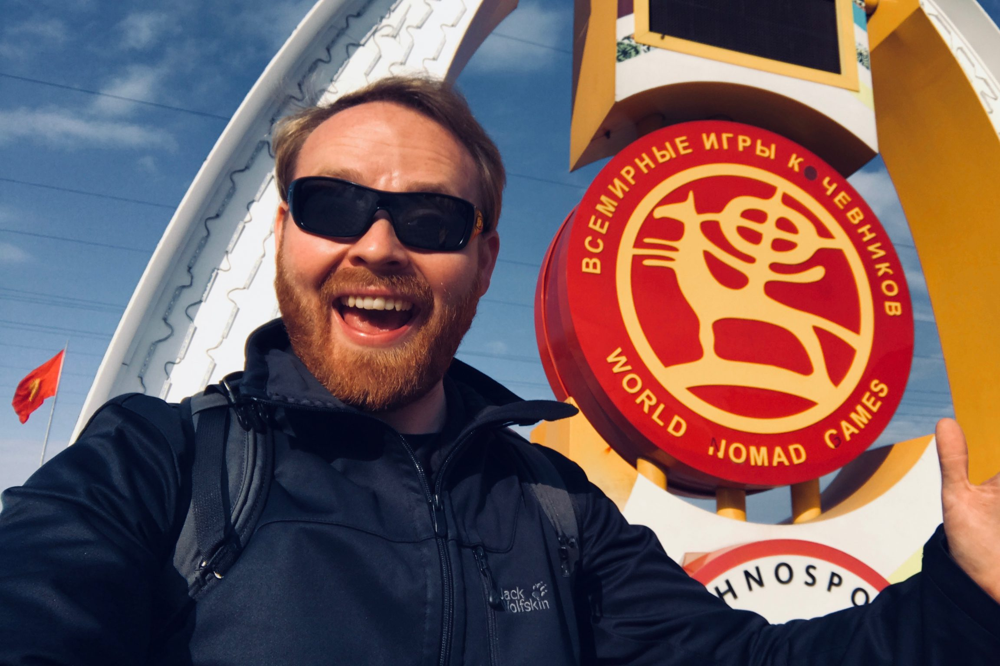
December - A winter break in Palma de Mallorca
Ending up the year is yet another awesome trip which was made possible by trivago. We have an office on the Spanish Mediterranean Island of Mallorca. Each employee can work from Palma for up to 1 month per year at the company’s expense. trivago has a beautiful villa which served as my home for two weeks as I escaped the German winter.
Britta came to visit for a few days. Among other explorations of the island, we rented some really nice road bikes and went for a long ride down the coast.
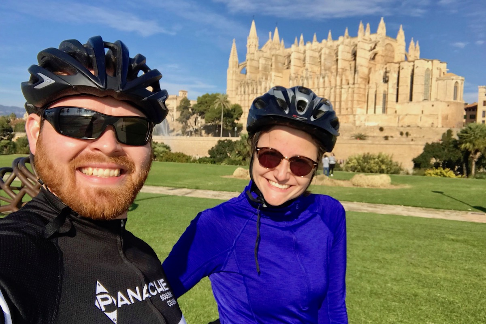
Happy New Year and all the best in 2018!
My 2018 is already off to a crazy start. In the next 6 weeks, I will visit Ireland, Scotland, London (twice), Switzerland, and Amsterdam, all while continuing to grow in my career at trivago and living life here in Düsseldorf.
I wish you and yours a very happy new year! I hope that 2017 was great for you and that 2018 will be even more wonderful. Please, feel free to leave a comment below with your new year reflections!